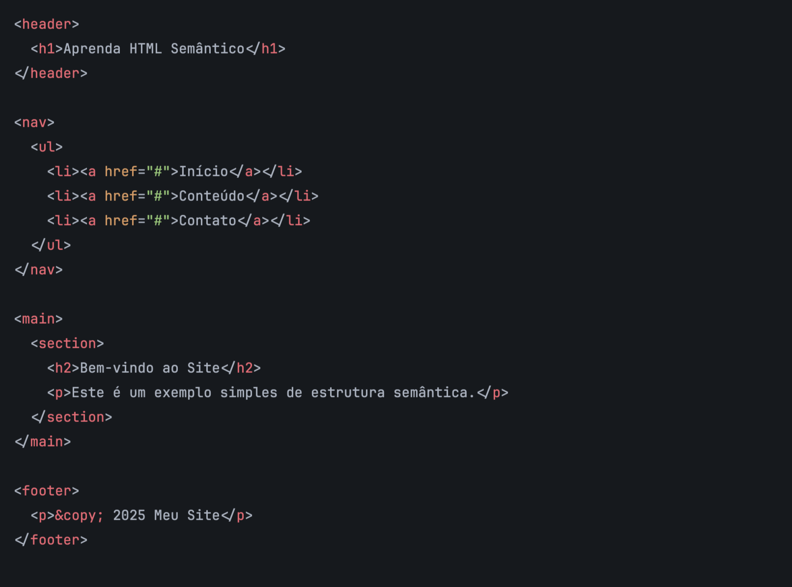
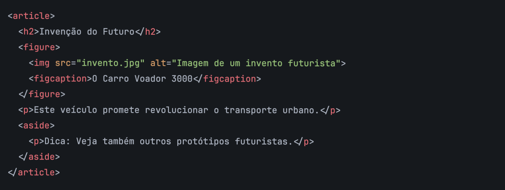
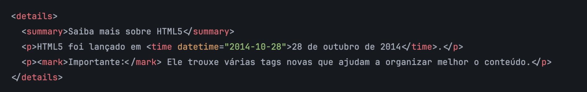

Nesta imagem vemos a estrutura básica e semântica de uma página
HTML5. As principais tags são:
<header>, que define o cabeçalho contendo
título e navegação; <nav>, que é
responsável pelo menu de links de navegação;
<main>, que contém o conteúdo principal da
página; <article>, usado para separar cada
bloco de conteúdo independente (posts ou artigos); e
<footer>, que define o rodapé com
informações de copyright. Essas tags organizam o conteúdo,
facilitando o entendimento para navegadores, buscadores e leitores
de tela, melhorando a acessibilidade e SEO.
Conteúdo Complementar e Multimídia

Esta imagem destaca as tags usadas para conteúdo complementar e
multimídia. O elemento <aside> cria uma
barra lateral que pode conter informações extras, links ou
anúncios relacionados. A tag
<section> organiza áreas dentro da barra
lateral, como “Contato” e “Outras Tags”. Para as imagens, usamos
<figure>, que agrupa a imagem e sua
legenda, e <figcaption>, que descreve a
imagem. Essas tags enriquecem a experiência do usuário, deixando o
site mais completo e organizado visualmente.
Detalhes Interativos e Marcação Semântica

Aqui vemos exemplos de interatividade e marcação semântica
avançada. A tag <details> cria um bloco
expansível, ideal para esconder ou mostrar informações extras,
como o botão “Ler Mais”. O elemento
<summary> define o título clicável para
abrir e fechar esse bloco. O <mark> é usado
para destacar texto importante dentro do conteúdo, geralmente com
fundo amarelo. Por fim, a tag
<time> representa datas ou horários,
facilitando a compreensão de quando um conteúdo foi atualizado.
Esses recursos aumentam a usabilidade e tornam o conteúdo mais
acessível e claro para todos os usuários.